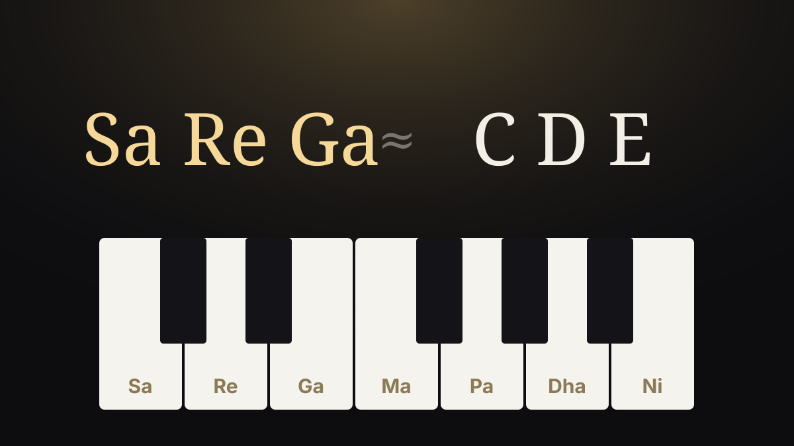

Notation
Sargam vs Western Notation: Which Should You Learn First?

If you grew up singing bhajans, film songs or classical music in South Asia, you probably think of melodies as Sa Re Ga Ma Pa Dha Ni. Most piano books, however, are written in Western notation: C D E F G A B on a five-line staff. So which should you learn first? The good news: they describe the same music, and learning one makes the other easier.
What is Sargam?
Sargam is the solmization system of Hindustani and Carnatic music. Its seven swaras are Sa, Re, Ga, Ma, Pa, Dha, Ni, short for Shadja, Rishabh, Gandhar, Madhyam, Pancham, Dhaivat and Nishad. The key idea is that Sargam is relative: Sa is "home", and you can place it on any key that suits your voice or instrument.
- Komal (flat) versions exist for Re, Ga, Dha and Ni. They are often written with a line underneath.
- Tivra (sharp) Ma is written with a small vertical line above.
- Sa and Pa are achal, fixed and never altered.
- A dot below a note means the lower octave (mandra saptak); a dot above means the higher octave (taar saptak).
What is Western notation?
Western notation names notes with letters (C D E F G A B) that are fixed to specific keys: C is always the white key to the left of the two black keys. Sharps (♯) and flats (♭) adjust notes by a semitone, and the staff shows pitch (how high) and rhythm (how long) at the same time.
How they map onto the piano
If you set Sa on C, as PianoVerse does by default, the two systems line up neatly:
| Key | Western | Sargam (Sa = C) | Solfège |
|---|---|---|---|
| White | C | Sa | Do |
| Black | C♯ / D♭ | komal Re | Do♯ |
| White | D | Re | Re |
| Black | D♯ / E♭ | komal Ga | Re♯ |
| White | E | Ga | Mi |
| White | F | Ma | Fa |
| Black | F♯ / G♭ | tivra Ma | Fa♯ |
| White | G | Pa | Sol |
| Black | G♯ / A♭ | komal Dha | Sol♯ |
| White | A | Dha | La |
| Black | A♯ / B♭ | komal Ni | La♯ |
| White | B | Ni | Ti |
Notice that the white keys from C give you shuddh (natural) swaras: the Bilawal thaat, which matches the Western C major scale. That's why "Sa = C" is such a comfortable starting point.
Side-by-side comparison
| Sargam | Western | |
|---|---|---|
| Note names | Relative to Sa (movable) | Fixed letters |
| Best for | Singing, ear training, raags, Indian melodies | Reading printed sheet music, harmony, chords |
| Rhythm | Shown with taal and spacing, learned by ear | Built into the staff notation |
| Transposing | Easy: just move Sa | Requires renaming notes |
| Learning materials | Abundant for Indian music | Abundant worldwide |
So which should you learn first?
Start with Sargam if…
- you already sing or hum in Sa Re Ga,
- you mainly want to play Indian, devotional or film-style melodies,
- you want to develop your ear and play by ear.
Start with Western if…
- you want to read printed piano books and sheet music,
- you're interested in chords, harmony, pop or classical repertoire,
- you plan to take graded exams (e.g. ABRSM or Trinity).
Our recommendation: learn with the system you already know, but see both. When every note you play shows "Ga · E · Mi" together, your brain connects them naturally, and within a few weeks you'll be bilingual.
Try it: one melody, two languages
Here's the opening of Twinkle Twinkle Little Star in both systems (Sa = C):
C C G G A A G — F F E E D D C
Sa Sa Pa Pa Dha Dha Pa — Ma Ma Ga Ga Re Re Sa
And here's the aaroh (ascending scale) of Raag Yaman, which uses tivra Ma:
B D E F♯ A B C
Ni Re Ga Ma (tivra) Dha Ni Sa
That F♯ is exactly what makes Yaman sound bright and longing. Play both versions in PianoVerse with the labels set to Sargam, then switch to Western and play them again.
Common questions
Can I change which key is Sa?
Yes. Many singers place Sa on C♯, D or another key to suit their voice. In PianoVerse's settings, choose any key as Sa and all Sargam labels move with it.
Is Sargam the same as Do Re Mi?
They are cousins. Both are syllable systems, and "movable Do" Solfège works much like Sargam. But Sargam has its own conventions for komal and tivra notes and for octaves.
Start learning in your notation
You don't have to choose forever. Start with the names that feel natural, let the others appear alongside, and enjoy the music.